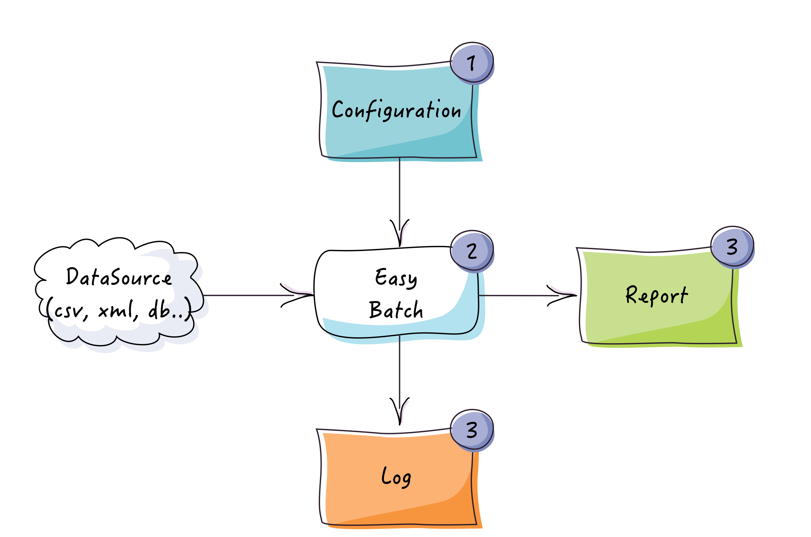
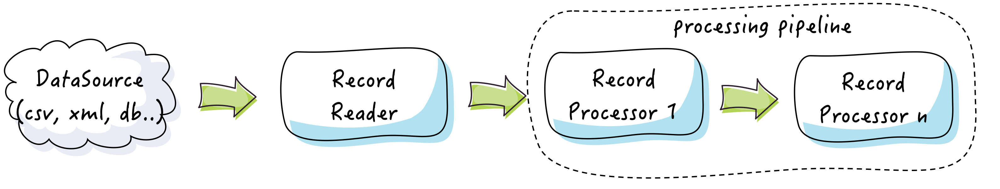
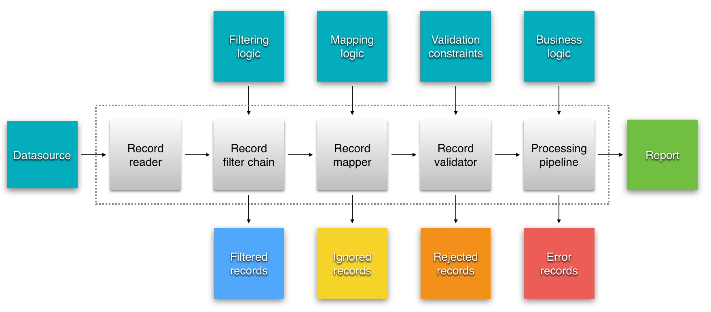
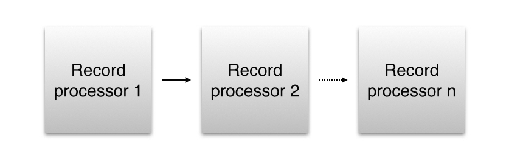
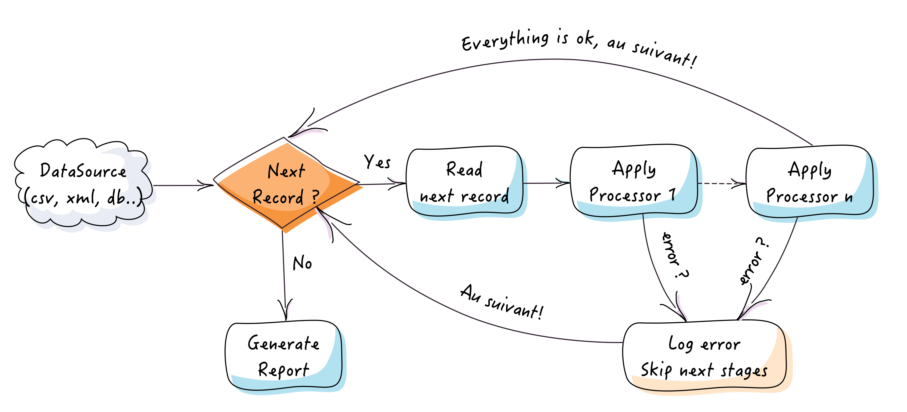

Architecture
1. Framework overview
This section will give you both a high level and a detailed view of Easy Batch's internals.
1.1 Macroscopic view
The next figure describes the framework from a 10000 foot view:

Easy Batch is all about processing a data source in batch mode. You can configure its behavior in many ways.
At the end of execution, the engine gives you a report with several metrics and statistics as well as a detailed log file about the job execution.
1.2 Mesoscopic view
Let's zoom in to see a bit more details about Easy Batch's internals:

Data read from the data source is first submitted to a pre-processing phase. In this phase, data is:
- Filtered to keep only relevant parts to be processed
- Parsed to a specific format if necessary
- Mapped to domain objects
- Validated against the application's constraints
After this pre-processing stage, the data is ready to be processed quietly. It is then submitted to a processing pipeline where successive operations are performed on it.
1.3 Microscopic view
Let's zoom in to the third level. The next figure describes the main components and gives you an overview of the framework's architecture:

Easy Batch processes data record by record. Depending on the data source type, a record can be a line in a flat file, a row in database, a tag in a XML file, a file in a folder, etc. The main components of the processing engine are:
- Record reader: reads records sequentially one by one from the data source
- Record filter chain: a chain of filters to skip undesired records from being processed
- Record mapper: maps records to domain objects
- Record validation pipeline: applies declared validation constraints on records
- Record processing pipeline: applies business processing logic for each record
All these components are optional. Easy Batch provides a No Operation implementation for each component. You can find all details about these components in the user guide.
Heads up!
You can extend this workflow by registering custom listeners to do pre/post processing before and after each step. Please refer to the user guide (section 9) for all details about how to use custom listeners.
At the end of execution, you get a report containing several metrics and statistics. Easy Batch also gives you a detailed log about what happened in case of failure in any of these steps.
When a record "survives" the pre-processing phase, it enters the processing pipeline where it is submitted to a chain of processors:

Record type can change from one processor to another. When all the processing pipeline has been applied, the engine moves to the next record.
2. Processing workflow
The workflow used internally by Easy Batch is illustrated by the next figure and described below:

- The engine reads records one by one from the data source. If the record should be filtered, then the engine skips it and moves to the next one.
- The record mapper then tries to map the record to an instance of the domain object. If the record is not well formed or cannot be mapped to the domain object, the engine ignores it and moves to the next one.
- The record validator applies declared validation constraints on the record. If a validation constraint is violated, then the record is rejected.
- Finally, the business logic is executed by the record processor on the domain object correctly populated with valid data. If an exception occurs during record processing, the engine logs the exception and moves to the next record.